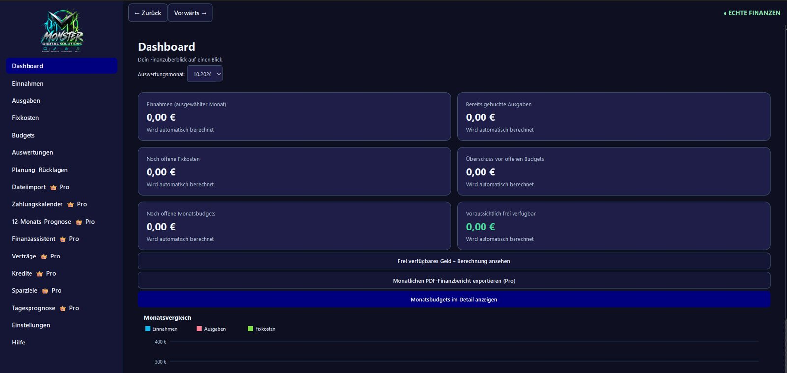
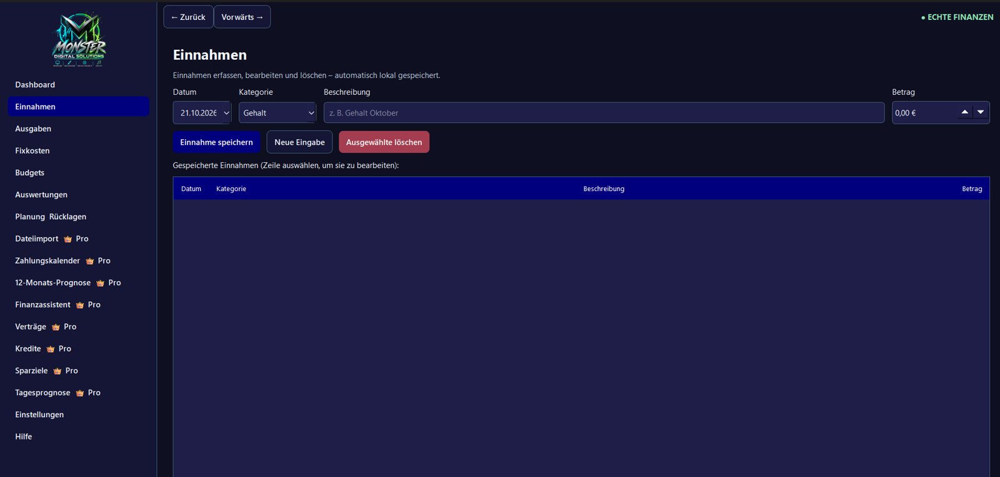
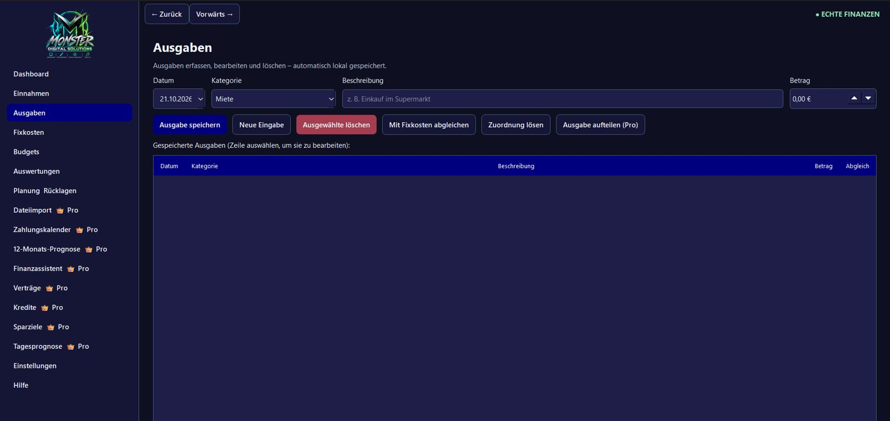
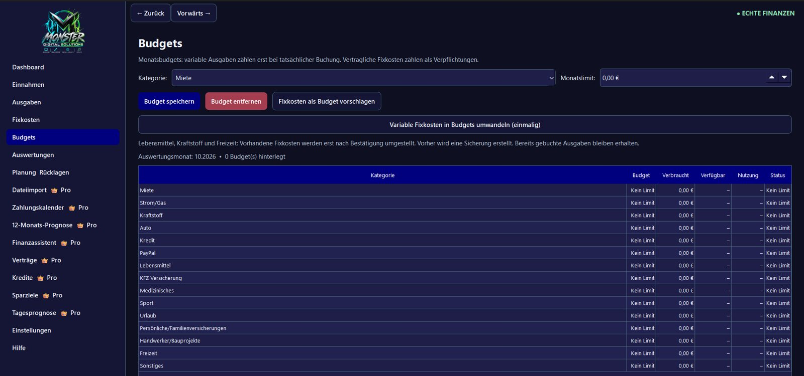
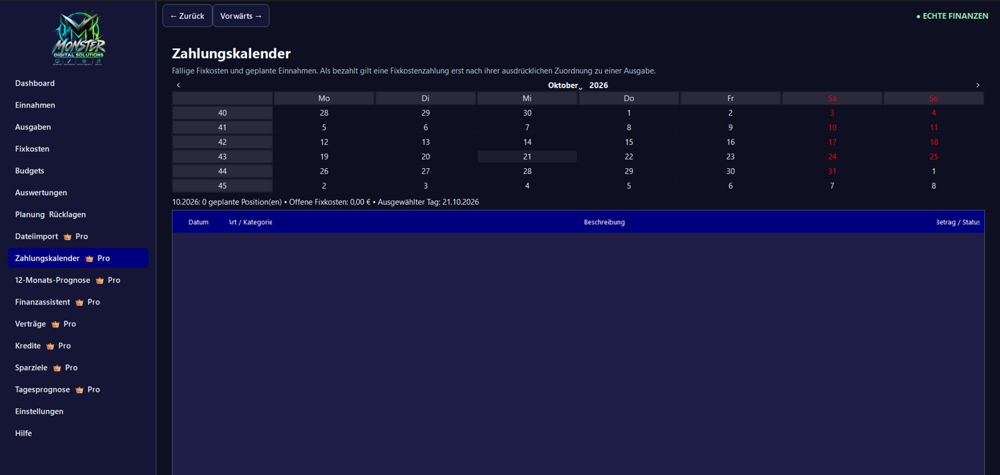
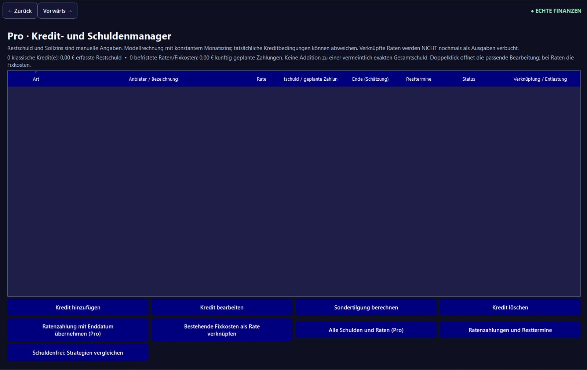
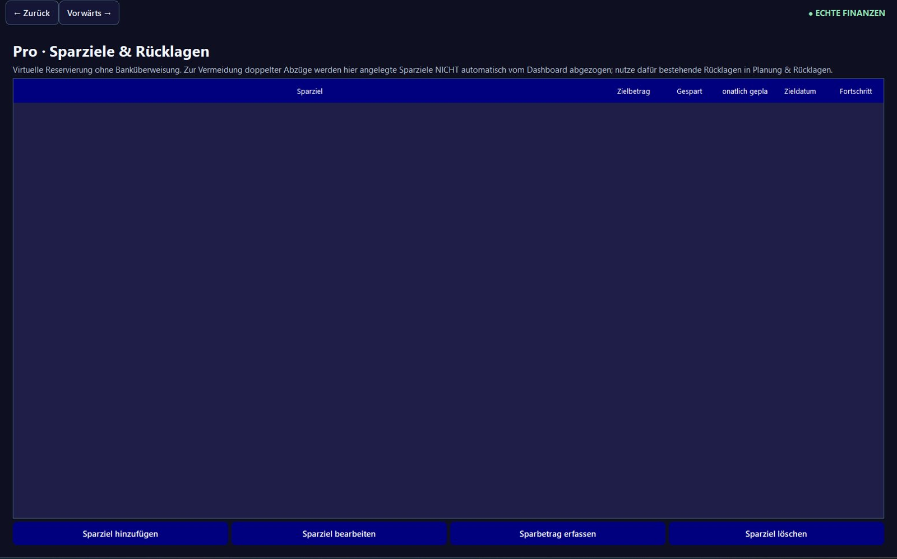

Einnahmen und Ausgaben
Finanzbewegungen erfassen, ordnen und übersichtlich auswerten.
Behalte deine Einnahmen, Ausgaben, Fixkosten und finanziellen Ziele im Blick. Plane deinen Alltag mit einer übersichtlichen Anwendung für deine persönliche Finanzverwaltung.

Vom täglichen Überblick bis zur längerfristigen Planung: Der Monster Finanzmanager bündelt verschiedene Bereiche deiner Finanzverwaltung an einem Ort.
Finanzbewegungen erfassen, ordnen und übersichtlich auswerten.
Wiederkehrende Kosten und geplante Ausgaben im Blick behalten.
Wichtige Verpflichtungen und laufende Zahlungen dokumentieren.
Entwicklungen mit Monats- und Tagesprognosen besser einschätzen.
Anstehende Zahlungen in einer zeitlichen Übersicht betrachten.
Individuelle finanzielle Ziele festhalten und den Fortschritt verfolgen.
So sehen verschiedene Bereiche des Monster Finanzmanagers aus. Die Abbildungen zeigen Programmansichten; Details können sich durch Aktualisierungen ändern.





